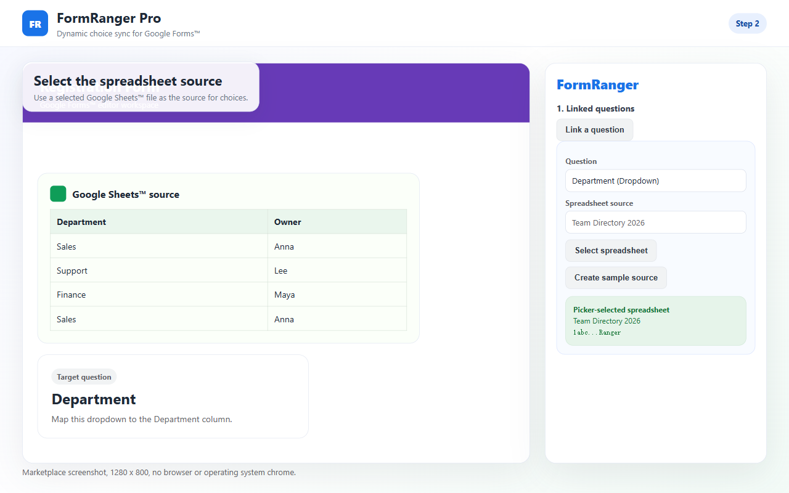

Preflight Google Forms choice updates before they go live.
Use a copied form to check selected-file access, duplicate labels, routing risk, the exact added/removed diff, and the respondent-facing output before any Google Sheets-backed choice update reaches a live form.
Map one question, run Preflight, update choices, then inspect the public preview.
Ready to verify
1. List2. Map3. Update
The safe update rule in one line
Copy the form, map one supported question, inspect the exact Preflight diff, update only after approval, then verify Alpha/Beta in the public respondent preview.
What this Preflight guide is actually for
This page covers the safety check around owner-controlled choice refreshes before respondents answer. The main product page explains the broader Sheets-to-Forms task; this guide focuses on preventing a bad update. It is not about live dependent dropdowns, payment inventory, booking seats, or filtering choices while a respondent is already inside the form.
Use it for
Departments, locations, session lists, class groups, products, categories, checkbox options, and grid labels that are maintained in Sheets.
Do not use it for
Seat reservations, live stock control, payment logic, or choices that must change differently for each respondent during the same form session.
Three-step visual path
1
Prepare Sheets
Keep valid options in one tidy source column.
2
Map the question
Select a dropdown, checkbox, multiple-choice, or grid question.
3
Update and preview
Run Preflight, update choices, and verify the live form.
Screenshots of the setup path
Use the screenshots to compare your setup against the expected first-run flow. If your screen does not reach the same point, the issue is probably file access, source selection, question mapping, or Preflight.

Select the spreadsheet source and make sure the tab and column are the list you actually want in the form.Map one supported Forms question to the selected Sheets column. A one-question test is easier to trust than a bulk setup.
Prepare the Sheets source column
Use one clear header
Keep the choices under a stable header such as Session, Department, Location, or Product. Avoid changing the header after mapping.
Remove blank-only values
Rows that look empty but contain spaces can create confusing output. Clean the source column before running the update.
Make test values obvious
For the first run, use Alpha and Beta or another pair of visible test values so you can spot the update immediately.
Keep formulas separate
If the source list is generated by a formula, map to the final clean output column rather than a helper column with intermediate values.
If the public preview does not match the Sheet
Mapping saved but not updated
Saving setup only stores the mapping. Click Update now and check whether the result says a question was updated.
Wrong form copy
If you duplicated the Google Form, confirm you are opening the add-on inside the copy that respondents will use.
Question type changed
Dropdown, multiple choice, checkbox, and grid choices are supported. Re-select the question if its type or ID changed.
Preview cache confusion
Open a fresh respondent preview after Update now. The editor view is not the final success signal.
A safe launch order
For a real form, make the choice update part of the launch checklist. Pause or avoid sending new respondents while you change the source list, run Update now, and inspect the public preview. If the form is already shared, add a short internal checkpoint before announcing that the new options are available.
Use it when the list changes before people answer
Good fit
Departments, locations, sessions, categories, checkbox lists, and grid rows maintained in Sheets.
Not a fit
Live booking, payment, inventory locking, or respondent-time dependent dropdown logic.
Need to see it once?
Short demo
Watch one source range update one Google Forms question.